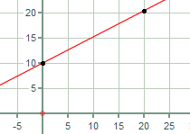

Equation of a Line (slope and intercept form)
Try this
Adjust the sliders on the right. They control the slope (m) and the intercept (b) of the line.
The equation and the line will change accordingly. You can also drag the origin.
Any straight
line
on the
coordinate plane
can be described by the equation
| y = mx+b |
| where: |
| x,y |
are the coordinates of any point on the line |
| m |
is the slope of the line |
| b |
is the intercept (where the line crosses the y-axis) |
Recall that the slope (m) is the "steepness" of the line and b is the intercept - the point where the line crosses the y-axis.
In the figure above, adjust both m and b with the sliders to see the effect of these variables.
Equations of this type that have no exponents in them (such as x2) are called 'linear equations' because they always graph as straight lines. The word "linear" is derived from "line".
What is the equation used for?
The equation of a line is used in two main ways.
-
As a compact way of defining a particular line.
If I wanted to tell you how to draw a particular line by email, I could write "draw the line defined by y=2x+12".
You could then plot this line exactly.
- To locate points on the line.
If I wanted to find a point on the line which has an x-coordinate of say 4,
I could insert 4 in the equation y=2x+12 and find that its y-coordinate is 20.
Examples
1. Draw the line y = 0.52x+10

Fig 1. Find two points to draw the line
We need to find two points on the line, then draw the line through them.
The first point is easy, since the intercept is 10, we can immediately plot a point at (x=0, y=10).
For a second point, let us pick at a random point where x=20. By substituting 20 as x into the equation
y = 0.52 . 20 +10
We get
y =20.4
So we plot a second point at (x=20 , y=20.4). We now simply draw the line through the two points as in Fig 1.
To check, press reset in the figure above and verify the result.
Try it yourself. You can print blank graph paper at
Blank Graph Paper and try it yourself, perhaps with a different equation.
2. Find where the line y = 0.52x+10 crosses the x-axis
In the figure above, press "reset".
The line shown has the equation y=0.52x+10. We are being asked to find the coordinates of the point where it crosses the x-axis.
Referring to the figure, you can see that where the line crosses the x-axis, the y-coordinate is zero.
So we substitute zero into the equation for y, and solve it for x:
0 = 0.52x +10
Subtract 10 from both sides and we get
0.52x = -10
Divide both sides by 0.52
x = -19.2
Which agrees with what we see in the figure.
Things to try
-
In the above diagram, press 'reset'. Then press the 'zero' under each slider to set them to exactly zero.
-
This is the line that satisfies the equation y=0x+0, or simply y=0.
This is of course zero for any value of x, and so is a straight horizontal line passing through the origin.
-
Now adjust the slider for b (the intercept), letting it settle on, say, 25.
This is the equation of the line y=0x+25 or simply y=25, a horizontal straight line passing through 25 on the y
axis.
Play with the b slider and see that the it has the effect of moving the whole line up and down.
-
Press reset. Adjust the m slider (slope) and observe the result. As you increase m, the line gets steeper. As you
reduce it below zero, the negative slope makes the line slope down to the right. But note that the line always passes through
the y axis at the same point (10 in this case).
-
Play with both sliders together until you get an intuitive sense of what m and b actually do to the line.
-
Adjust m and b in the figure and then click on "hide details". By looking at the graph, estimate m and b, and write the equation of the line.
Then click "show details" and see how close you got.
Other linear equation topics
Linear Function Explorer
(C) 2011 Copyright Math Open Reference.
All rights reserved